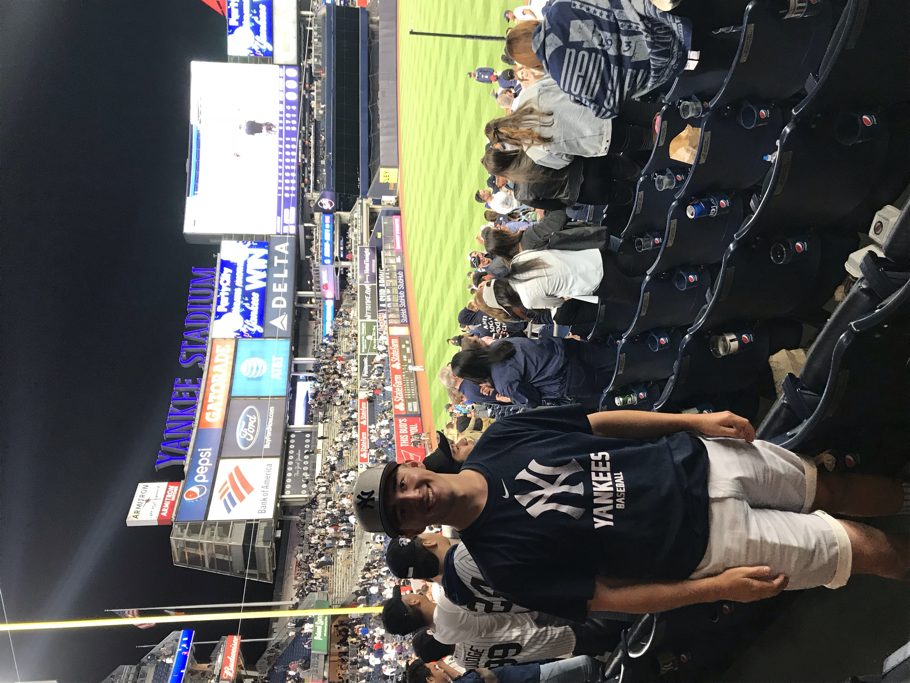

The first thing you should know about me is that family is most important to me. Here is a picture of them:

My favorite thing to do is watch and play all sports. However, baseball is my favorite. Visiting Major League Baseball Stadiums is my favorite thing to do on vacation! Below is a video of some drone footage of my favorite stadium, Yankee Stadium:
Here is a picture of me visiting the stadium five years ago!
Here is a little more about my life in a professional sense:
- Education
- Graduated from Olympus High School
- Currently A Sophomore at Brigham Young University
- Applying to the Global Supply Chain Management Degree at BYU
- Experience
- Field Survey Technician for RH Borden Co.
- Training Services Specialist at the Missionary Training Center
- Skills
- Love to talk to and be around people as much as possible
- Extremely organized and like not only my things, but others to be organized as well
- Hardworking: seeing things get done is very satisfying to me